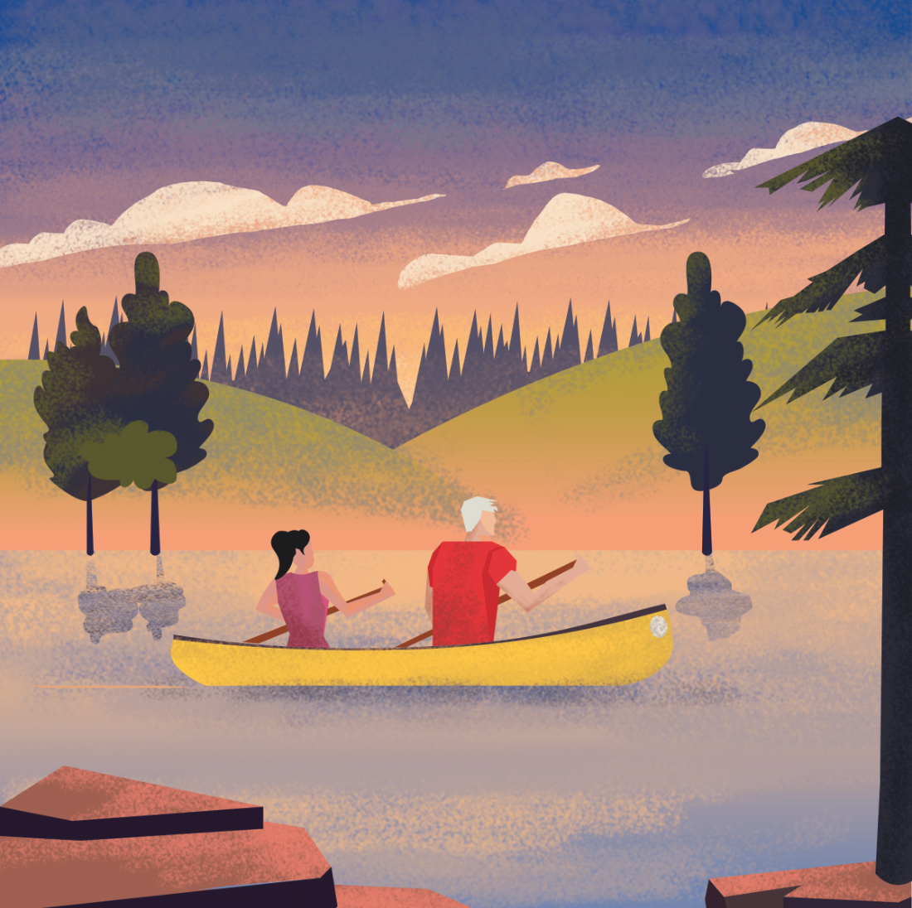
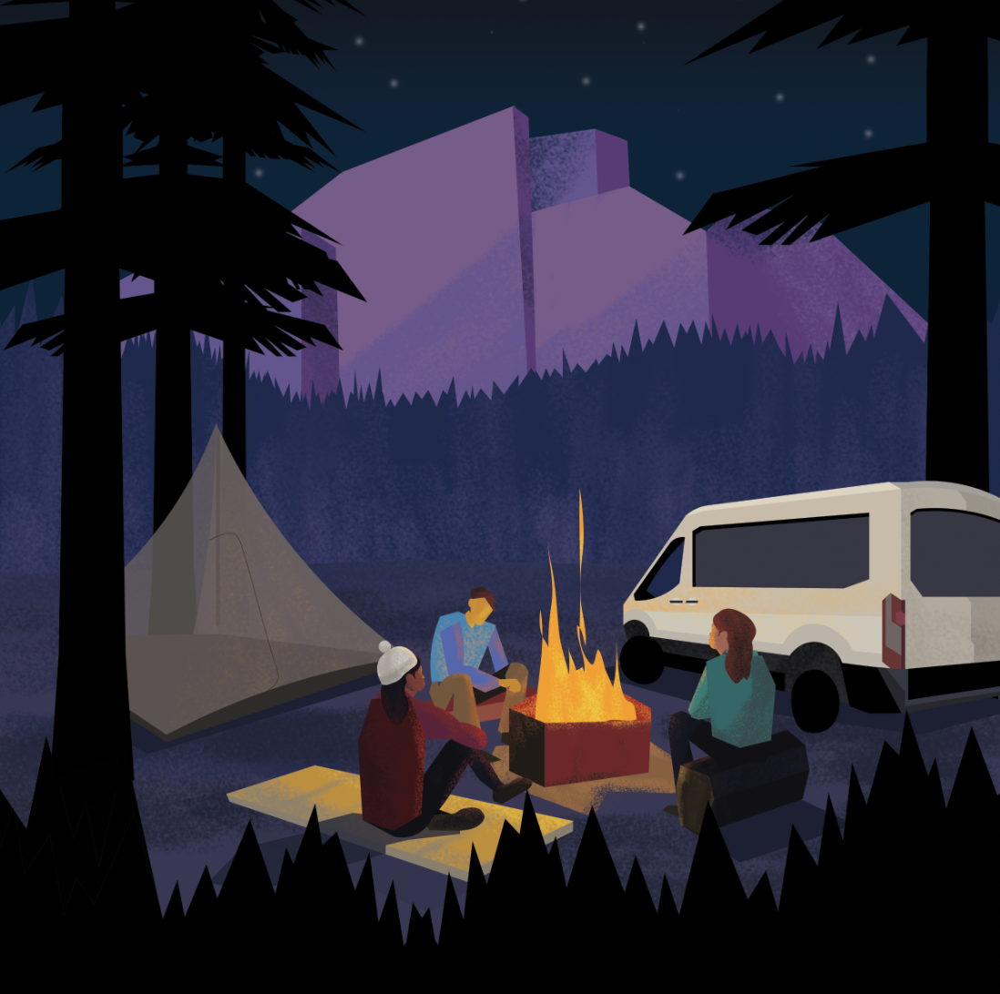
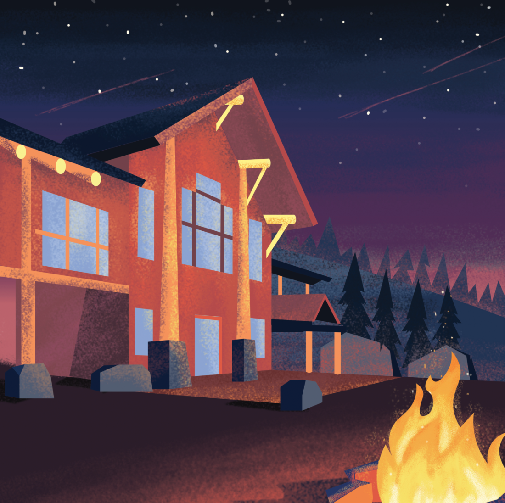
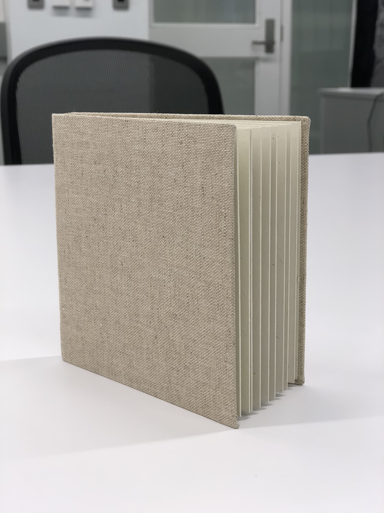

Adventure Book
For my Digital Drawing class's final project, I wanted to create an Adventure Book to showcase all the outdoors experiences I've had during my time at Dartmouth. This project was inspired by my position as "Klymbing Croo" Captain & Dartmouth Mountaineering Club chair and having the opportunity to reflect on how much I've grown as a person these past four years thanks to the Dartmouth Outing Club. I've had so many moments of reflection, nostalgia, and bittersweetness as a senior in college looking back at my time here, and I think this book encapsulates so many of those feelings.
The project includes a series of eight images, which I then assembled in a hand-bound book. I truly enjoyed working on this project because of its personal significance and how it gave me a way to express my gratitude to all who helped me get outside. I'd love to continue working on this project... maybe I'll create another one for the next phase of my life!
Illustrations & Completed Project

Red Rock Canyon - I spent three spring breaks climbing at Red Rock with the Dartmouth Mountaineering Club (DMC)
Connecticut River - This image illustrates a particularly memorable day canoeing at the river
North Conway - I took a trad climbing class with the DMC and spent a weekend camping and climbing at Cathedral

Mount Lemmon - This trip to Mount Lemmon my freshman year helped me grow closer to club members and conquer personal fears

The Fifty - I hiked "The Fifty" - a 53.6 mile hike from Moosilauke Ravine Lodge in the Whites to Robinson Hall on campus that a team of four completes in around 28 hours straight. It was definitely a test in mental and physical endurance, and I am so proud of us for finishing strong

Waterval Boven - I spent a winter break climbing and road tripping through South Africa with three of my friends thanks to Schlitz and DMC Adventure Funding. A video documenting the experience can be found here.

Lake Morey - Whenever anyone asks me where my favorite place on earth is, it's here. I love skating on Lake Morey's frozen 3-mile track -- I'm on the figure skating team at school and started out pond skating in my backyard in Minnesota, and Lake Morey brings back the child-like happiness of skating outside
Jubile - The Moosilauke Ravine Lodge is a memorable place for me, and one especially important night was Jubile, where each "croo" from First-Year Trips came together and celebrated the completion of the orientation program. The three weeks I spent as the "Klymbing Croo" captain and leading a team of five to show nearly 100 first-years the beauty of climbing and the outdoors was easily the best and most rewarding time of my life.
Illustration Process

For this project, I first sketched a rough draft of my vision. After that, I brought my drawing into Illustrator and created vector shapes. I liked the crispness of these illustrations, but I found that adding a more "raw" feeling was difficult. So, I exported the layers into Photoshop and used brushes to create the final textured image.